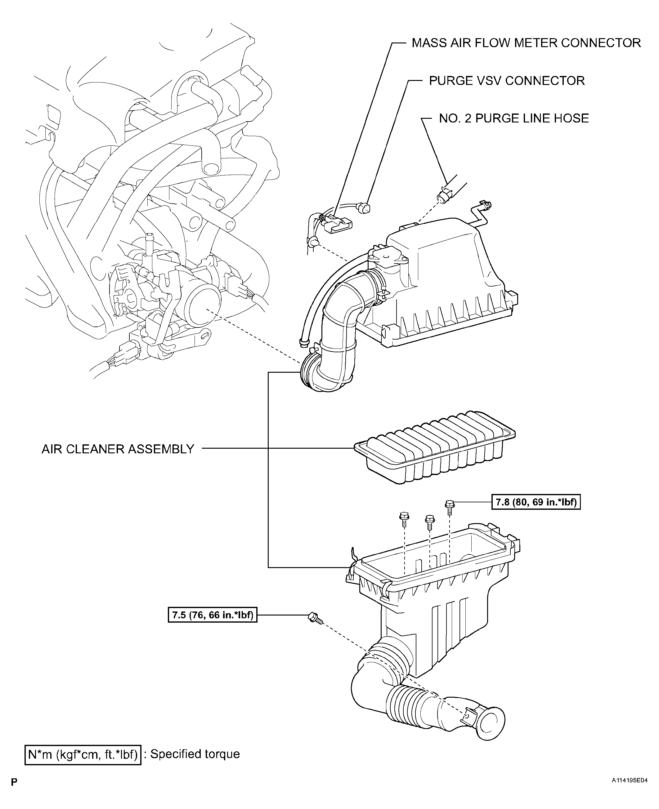
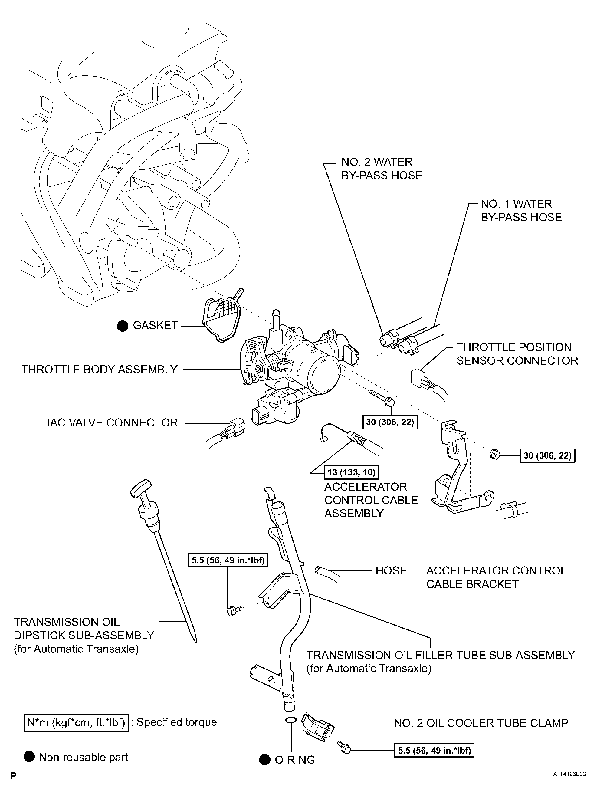

Throttle Body: Components
Fig 1: Identifying Throttle Body Components (1 Of 2)

Courtesy of © TOYOTA, LICENSE AGREEMENT TMS1002
Fig 2: Identifying Throttle Body Components (2 Of 2)

Courtesy of © TOYOTA, LICENSE AGREEMENT TMS1002